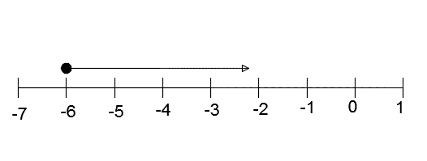
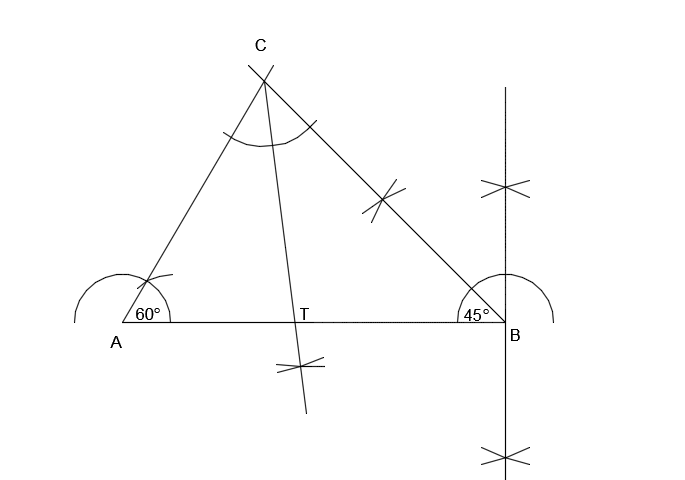

ESSAY TYPE QUESTIONS (2010)
a. Factorize \( (m+n)(2x-y)-x(m+n) \)
b. A and B are subsets of a universal set
U = {1, 2, 3, 4, 5, 6, 7, 8, 9, 10, 11, 12, 13, 14, 15, 16, 17, 18 }
such that A = { even numbers } and
B = { multiples of 3 }.
i. List the elements of the sets
\(A, B, (A \cap B) , (A\cup B) \text{ and } (A\cup B)^{'} \)
ii. Illustrate the information in (i) on a Venn Diagram.
c. Find teh values of x and y in the vector equation:
\(\begin{pmatrix} 5 \\ 3 \end{pmatrix} + 2 \begin{pmatrix} x \\ y \end{pmatrix} - \begin{pmatrix} 1 \\ -7 \end{pmatrix} = 0 \)
a.
\( (m+n)(2x-y)-x(m+n) \)
= \( (m+n)(2x-y-x) \)
= \( (m+n)(x-y) \)
b.
i.
\( A=\{2, 4, 6, 8, 10, 12, 14, 16, 18\} \)
\( B=\{3, 6, 9, 12, 15, 18\} \)
\( A\cap B = \{6, 12, 18\} \)
\( A\cup B = \{ 2, 3, 4, 6, 8, 10, 12, 14, 15, 16, 18\} \)
\( (A\cup B)^{'} = \{1, 5, 7, 11, 13, 17\} \)
ii.
c.
\(\begin{pmatrix} 5 \\ 3 \end{pmatrix} + 2 \begin{pmatrix} x \\ y \end{pmatrix} - \begin{pmatrix} 1 \\ -7 \end{pmatrix} = 0 \)
\(\Rightarrow \begin{pmatrix} 5 + 2x -1 \\ 3 + 2y + 7 \end{pmatrix} = 0 \)
\( \Rightarrow 5 + 2x - 1 = 0 \)
\( \Rightarrow 2x = -4 \)
\( \Rightarrow x = -2 \)
Also
\( 3 + 2y + 7 = 0 \)
\( \Rightarrow 2y = -10 \)
\( \Rightarrow y = - 5 \)
a. Find the sum of 2,483.65, 701.532 and 102.7, giving your answer to one decimal place.
b. In the quadrilateral ABCD above, |AB| = 3 cm, |BC| = 4 cm, |CD| = 12 cm and angle ABC = 90\(^{\circ} \) and angle ACD = 90 \(^{\circ} \). Calculate:
i. the perimeter of ABCD
ii. the area of ABCD
a. Evaluate \( \dfrac{2^{7} \times 3^{4} \times 5^{2} }{ 2^{3} \times 3^{2} \times 5^{2} } \), leaving your answer in standard form.
b.
\( \dfrac{1}{3}x + 1 \geq \dfrac{1}{2}x + \dfrac{1}{4}(2 - x) \)
\( 12 \times \dfrac{1}{3}x + 1 \times 12 \geq \dfrac{1}{2}x \times 12 + 12 \times \dfrac{1}{4}(2 - x) \)
\( \Rightarrow 4x + 12 \geq 6x + 3(2 - x) \)
\( \Rightarrow 4x + 12 \geq 6x + 6 - 3x \)
\( \Rightarrow 4x - 3x \geq 6 - 12 \)
\( \Rightarrow x \geq -6 \)

a. Evaluate \( \dfrac{2^{7} \times 3^{4} \times 5^{3} }{ 2^{3} \times 3^{2} \times 5^{2} } \) leaving your answer in standard form.
b. Kwame rode a bicycle for a distance of \(x \) km and walked or another \( \dfrac{1}{2} \) hour at a rate of 6 km per hour. If Kwame covered a total distance of 10 km, find the distance \( x \) he covered by bicycle.
c. A rectangular tank of length 22 cm, width 9 cm and height of 16 cm is filled with water. The water is poured into a cylindrical container of radius 6 cm. Calculate the
i. volume of the rectangular tank.
ii. depth of water in the cylnindrical container.
\( [Take \pi = \dfrac{22}{7} ] \)

b. i. |CT| = 5.0 cm
ii. Angle CTB = 97\( ^{\circ} \)
c. Fraction of money left = \( 1 - \dfrac{3}{8} = \dfrac{5}{8} \)
\( \Rightarrow \dfrac{5}{8}x = 15 \)
\( \Rightarrow x = \dfrac{8}{5} \times 15 = \) GHc 24.00
a. Simplify: \( 7\dfrac{2}{3} - 4\dfrac{5}{6} + 2\dfrac{3}{8} \)
b. The area of a trapezium is \( 31.5 cm^{2} \). If the parallel sides are of lengths 7.3 cm and 5.3 cm, calculate the perpendicular distance between them.
c. The marks scored by four students in a Mathematics test are as follows:
Esi - 92
Seth - 85
Mary - 65
Efe - x
i. Write down an expression for the mean (average) of the marks.
ii. If the mean is less than 80, write a linear inequality for the information.
iii. Find the possible marks Efe scored in the test. Represent your answer on the number line.
a.
i. \( \text{ Length = L = } (2x + 5)\) m
ii.\( \text{ Width = W = }(x - 10)\) m
\(\text{ Perimeter = } 2L + 2W = 80\)
\(2(2x + 5) + 2(x - 10) = 80\)
\(4x + 10 + 2x -20 = 80\)
\(6x - 10 = 80\)
\( x = \dfrac{90}{6} = 15 \)
ii. \( \text{Length } = 2 \times 15 + 5 = 35 m \)
\( \text{Width } = 15 - 10 = 5 m \)
Area = Length x Width
\( 35 \times 5 = 175 m^{2} \)
iii. \( 175 \times 0.24 \) = GHc 42.00
\( x + x = 134 \) (sum of interior opposite angles)
\( \Rightarrow x = \dfrac{134}{2} = 67^{\circ} \)
\( w + x = 180 \) (angles on a straight line)
\( \Rightarrow w = 180 - 67 = 113 ^{\circ} \)
a. Solve \( \dfrac{4x-3}{2} = \dfrac{8x-10}{8} + 2\dfrac{3}{4} \)
b. Using a scale of 2 cm to 1 unit on both axes, draw two perpendicular lines OX and OY on a graph sheet for the x-axis rom -5 to 5 and the y-axis from -6 to 6.
i. Plot the points A(2, 3) and B(-3, 4) and join them with a long straight line.
ii. Plot on the same graph sheet, the points C(4, 2) and D(-2, -3) and join them with a long straight line to meet the line through AB.
iii. Measure the angle between the lines through AB and CD.
iv. Find the coordinates of the point at which the lines through AB and CD meet.
a.
i. \(\text{ a + 2b } = \begin{pmatrix} -3 \\ 3 \end{pmatrix} + 2 \begin{pmatrix} -4 \\ 6 \end{pmatrix} \)
\(= \begin{pmatrix} -3 + 8 \\ 3 -12 \end{pmatrix} \)
\(= \begin{pmatrix} 5 \\ -9 \end{pmatrix} \)
ii. \(\dfrac{1}{2} \text{ a + 2b } = \dfrac{1}{2} \begin{bmatrix} 2 \begin{pmatrix} -3 \\ 3 \end{pmatrix} - \begin{pmatrix} -4 \\ 6 \end{pmatrix} \end{bmatrix} \)
\(= \dfrac{1}{2} \begin{bmatrix} \begin{pmatrix} -6 - 4 \\ 6 + 6 \end{pmatrix} \end{bmatrix} \)
\(= \dfrac{1}{2} \begin{pmatrix} -10 \\ 12 \end{pmatrix} \)
\(= \begin{pmatrix} -5 \\ 6 \end{pmatrix} \)
b
i. Number of pupils in the school
= \( 24 + 35 + 35 + 20 + 21 + 45 = 180 \)
ii. Mean number of pupils in a class
= \( \dfrac{\text{Total number of pupils in the school}}{\text{Total number of classes}} \)
= \( \dfrac{180}{6} = 30 \)
iii. Percentage of pupils in class six
\( \dfrac{45}{180} \times 100 = 25\% \)
\( 312_{five} = 3 \times 5^2 + 1 \times 5^1 + 2 \times 5^0 \)
= \( 75 + 5 + 2 \)
= 82
The following table shows the frequency distribution of the number of letters in the surnames of some students in a school.
a. From the distribution, determine
i. the mode.
ii. the mean.
b. If a student is selected at random, find the probability that his/her name will contain more than 7 letters.
c. Draw a bar chart for the distribution.
a.
i.
\( \text{When } x = 50 \\ \Rightarrow y = \dfrac{50}{20} = 2.50 \\ \)
\( \text{When } x = 150 \\ \Rightarrow y = \dfrac{150}{20} = 7.50 \\ \)
\( \text{When } x = 200 \\ \Rightarrow y = \dfrac{200}{20} = 10.50 \\ \)
\( \text{When } x = 300 \\ \Rightarrow y = \dfrac{300}{20} = 15.00 \\ \)
The completed table is shown below:

From the graph,
i. the cost o 175 grammes of rice is GHc 8.80
ii. the weight of rice that can be bought with GHc 14.00 is 280 grammes.